지금 구조는 LLM 에게 붓을 쥐여 주고(좌표·타일 인덱스 직접 지정) 잘 칠하도록 설득한다(스펙 게이트·볼륨 계약·다양성 되먹임). 제안은 반대다 — LLM 은 붓을 고르기만 하고(작은 JSON 하나), 칠하는 것은 전부 시드 기반 결정적 생성기가 한다. 다양성은 설득이 아니라 표본추출 규칙으로 보장된다.
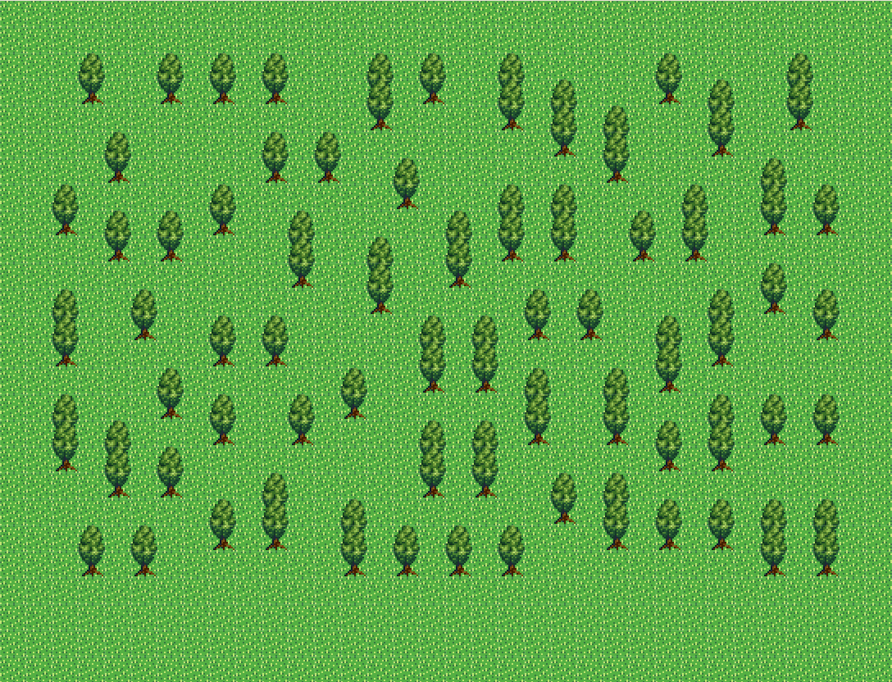
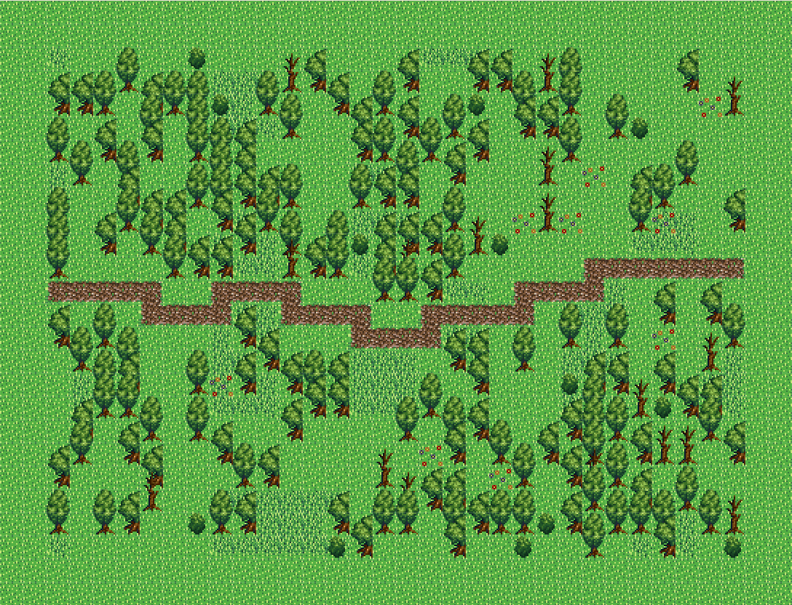
tree 프리미티브 — 균일 산포 · 지면 변화 0 · 하층식생 0. "뻔한 숲"의 정체.
오른쪽: 이 제안대로 구현한 forestWrites.ts 프로토타입 — 군집 캐노피(밑동 위 수관 겹침) + 수종·고사목 혼합 +
덤불·꽃 하층식생 + 공터 + 폭 1 오솔길. 시드로 결정적이며, 기존 영역작업 승인 흐름(runMock→pending)을 그대로 탔다.
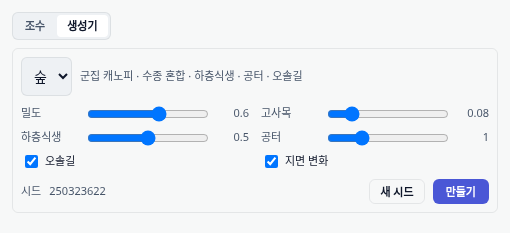
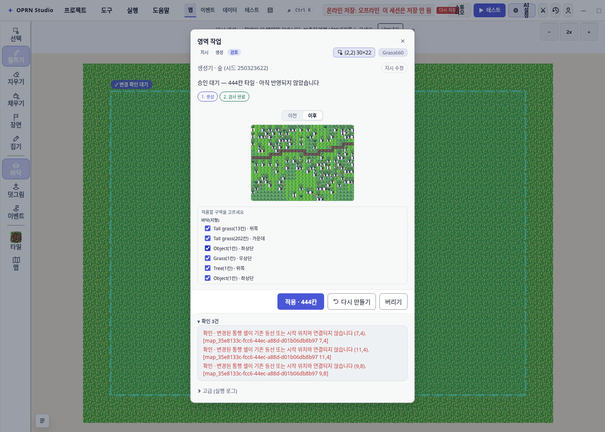
조수 | 생성기 스위치 —
기본값은 언제나 조수라 지금까지 쓰던 화면은 한 픽셀도 바뀌지 않는다. 생성기를 고르면 문장 입력 대신
파라미터 슬라이더·시드가 뜨고 AI 를 한 번도 부르지 않는다.
오른쪽: 그 산출물이 조수와 똑같은 승인 카드로 들어온다 — before/after, 부분 적용 체크박스, 통행 진단, undo 1개까지 전부 재사용.
만드는 길만 둘이고, 검토·적용하는 길은 하나다.
코드베이스가 이미 답을 알고 있다. 다섯 가지 사실을 코드에서 그대로 읽었다.
현행 경로는 프롬프트 → 플래너(LLM) → WorkPlan → 생성기(LLM) → paint_tiles {cells, tileId} 툴콜 수십 개다.
타일 하나하나가 토큰이고, 토큰 하나하나가 비결정성이다. 그래서 느리고, 비싸고, 같은 프롬프트가 매번 다른 품질로 나온다.
이 비결정성을 막으려고 게이트가 자랐다 — buildSpec 밑그림 검증(682줄), WorkPlan successTools 게이트(850줄), 완성도 린트, Ralph 재주입.
① 코드 시맨틱 테이블(tileSemantics*.ts 9파일 · 346항목 · 43종 자유 역할 문자열 · 사람이 UI 로 못 고침),
② 프로젝트 데이터(tileGroups/tileMeta · AI 프롬프트에 실림),
③ 역할 enum 두 벌(TileGroupRole vs PaletteSlotRole · terrain/ground, fence/boundary 동의어 난립).
PR #435(A-1·A-2)가 15곳의 역할 분기를 roleCapabilities() 하나로 모은 것은 옳은 수술이었다.
문제는 다음 단계 A-3 — 역할을 사용자 정의 문자열로 개방하고 DB 탭·마이그레이션·villagePresets 를 얹는 방향이다.
43종 어휘가 복잡해서 생긴 병을 "사용자가 어휘를 더 만들 수 있게" 해서 고칠 수는 없다.
집 형태 카탈로그 34종은 이미 선언형 데이터로 존재한다(houseTemplateCatalog.ts).
그런데 "어떤 템플릿을 쓸지"를 LLM 이 고르게 했더니 한 종에 수렴했고,
그걸 고치려고 맵을 되읽어 다양성을 리포트하고 프롬프트로 되먹이는 관찰 고리가 생겼다.
확률 모델에게 "골고루 뽑아라"라고 부탁하는 구조 — 비복원 추출 세 줄이면 코드가 보장할 수 있는 성질이다.
숲은 더 심하다. 숲 전용 생성기는 아예 없고, fill_region+scatter 를 LLM 이 즉흥 조합한다.
2026-09-01 적대적 20프롬프트 실사: 마을·집을 요청한 프롬프트가 0개인데 맵 1→39개, 이벤트 0→593개. "방금 한 거 취소해" 요청에 맵이 16→32로 두 배. 원인은 플래너가 직접 실행 계획을 내면 코드가 그것을 거부하고 고정 볼륨 계약(허브맵→NPC→상점→퀘스트)으로 갈아끼우는 경로 + 완성도 린트가 "변경 0건 = 미이행"으로 처벌하는 규칙이다. 판단력의 문제가 아니라 쓰기 경로의 강제 주입 문제라는 것이 실사의 결론이었다.
상·하층 타일이 겹쳐 렌더된 이미지를 모델이 "보고" 판정해야 한다. 겹친 픽셀에서 의미를 복원하는 것은 비전 모델에게도 어려운 문제라서(타일 80을 탁자로 오인한 전례), 검증이 느리고 확률적이다. 반면 의미 그리드(이 칸은 tree, 이 칸은 path)가 별도 자료구조로 존재하면 연결성·도달성·정합성은 전부 코드로 판정된다.
| 원칙 | 의미 | 베어내는 것 |
|---|---|---|
| ① 의미와 픽셀의 분리 | AI 는 의미(숲·마을·호수·밀도)만 다루고, 타일 인덱스는 결정적 코드(생성기+오토타일러)만 다룬다. | paint_tiles 좌표 지정, 밑그림 게이트, 타일 어휘 프롬프트 주입 |
| ② 다양성은 구성으로 보장 | 템플릿·킷·부속의 시드 기반 비복원 추출. "골고루"는 확률 모델에게 부탁하는 게 아니라 표본추출기가 보장하는 성질이다. | houseVariety 관찰 고리, look_at_houses 되먹임, 다양성 프롬프트 |
| ③ 검증은 의미 그리드에서 코드로 | 연결성(flood fill)·문 도달성·지붕-벽 정합은 의미 그리드에서 O(n) 판정. vision 은 최종 스팟체크로 강등. | vision 기반 품질 판정, 완성도 린트의 "0건=미이행" |
한 문장으로: 지금까지는 LLM 을 더 잘 감시하는 코드를 쌓았다. 이제는 LLM 이 감시가 필요 없는 일만 하게 줄인다.
// "남쪽에 어촌 마을 하나, 집은 다섯 채쯤" → { "op": "village", "region": { "x": 4, "y": 18, "w": 28, "h": 14 }, // 생략 시 사용자 선택 영역 "params": { "houses": 5, "preset": "fishing", // 농촌|어촌|산촌 — 파라미터 프리셋일 뿐 "layout": "spine", // spine|plaza|scatter "fields": 1, "fences": 0.5 }, "seed": 271828 // 생략 시 랜덤 — 재생성 = 새 시드 }
파싱 실패가 곧 검증이다. op 가 카탈로그에 없거나 파라미터 타입이 틀리면 그 자리에서 재요청 — 밑그림 게이트도,
구간 격리도, 좌표 선분배도 필요 없다. 영역 밖 번짐은 기존 clipMapCellsToRegion 하드 클립이 그대로 막는다.
모호한 프롬프트("좀 꾸며줘")는 의도 파서가 후보 오퍼레이터 2–3개를 질문으로 반환한다 — 뭐라도 만들어야 한다는 압력(볼륨 계약·0건 처벌)이 없으므로 되묻기가 자연스러워진다.
A-3 의 "역할을 사용자 정의 문자열로 개방" 대신, 코드가 소유한 고정 슬롯 12칸을 제안한다. 사람은 역할을 정의하지 않는다 — 슬롯에 타일을 꽂기만 한다.
슬롯은 오퍼레이터가 소비하는 재료의 전체 목록이다. forest 는 ground·ground-alt·tree·bush·flower 를 쓰고,
village 는 house-kit·path·plaza·fence·field 를 쓴다. 슬롯이 채워졌는가 = 그 오퍼레이터를 쓸 수 있는가.
43종 자유 어휘, 역할 enum 두 벌, 시맨틱 테이블 9파일이 전부 이 보드 하나로 접힌다.
PR #435 의 roleCapabilities 8능력 표는 그대로 슬롯의 정적 속성이 된다 — 슬롯이 곧 능력의 담지자라서 A-3 의 "role: string 개방"이 필요 없어진다.
origin:"user" — 기존 vocab 신뢰 계약(번들=승인)이 그대로 적용된다.오퍼레이터 = 의미 그리드를 쓰는 결정적 함수. 전부 시드를 받고, 전부 ms 단위로 끝난다.
| op | 파라미터 | 소비 슬롯 | 내부 알고리즘 (전부 고전 기법) |
|---|---|---|---|
| forest | density · clearings · path · deadRatio · underbrush | 지면·지면변형·나무·덤불·꽃 | 군집 blue-noise 산포 + 지면 노이즈 + 공터 마스크 |
| village | houses · preset(농촌|어촌|산촌) · layout(spine|plaza|scatter) · fields · fences | 집킷·길·광장·울타리·밭 | 도로 스파인 → 필지 분할 → 템플릿 비복원 추출 → A* 골목 |
| water | kind(lake|river|shore) · width · bank(sand|grass) | 물·모래 | 블롭/랜덤워크 + 오토타일 테두리 |
| road | from · to · style · width | 길·광장 | A* (통행 그리드 비용) |
| field | crop · rows · fence | 밭·울타리 | 행 스탬프 |
| scatter | slot · density · cluster | 자유 소품·아무 슬롯 | Poisson 산포 (통행 셀만) |
| clear | restore(기본: 지면) | 지면 | 영역 리셋 + 오토타일 재봉합 |
"숲을 울창하게" → forest{density:0.85}. "마을을 만들어줘" → village{houses:4..6}.
사용자 프롬프트의 형용사가 파라미터로, 명사가 오퍼레이터로 떨어진다 — 의도 파서가 할 일은 그 번역뿐이다.
기존 author_house·author_village·34종 템플릿·킷 6종·오토타일 엔진은 오퍼레이터의 내부 부품으로 전부 재사용된다. 버리는 건 "LLM 이 그것들을 직접 지휘하는 층"이다.
숲이 뻔했던 이유는 취향이 아니라 구조다: 숲 생성기가 없어서 모델이 나무 반복 배치로 수렴했다.
이 절의 오퍼레이터는 이 워크트리에 실제로 구현되어 있다 —
src/editor/regionTask/forestWrites.ts(순수 함수·시드 결정적) + 하네스 __oprnRegionTaskHarness.forest(),
불변식 테스트 6개(결정성·영역 경계·수관-밑동 페어·구조물 보호·밀도 단조·오솔길 연결성) 전부 통과.
아래 그림은 전부 실제 에디터 스크린샷이다.
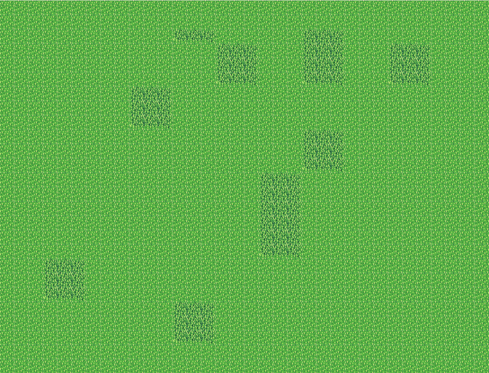
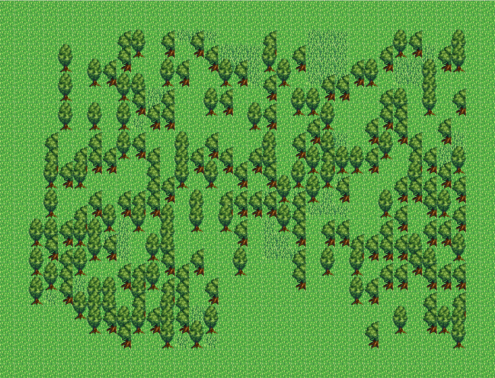
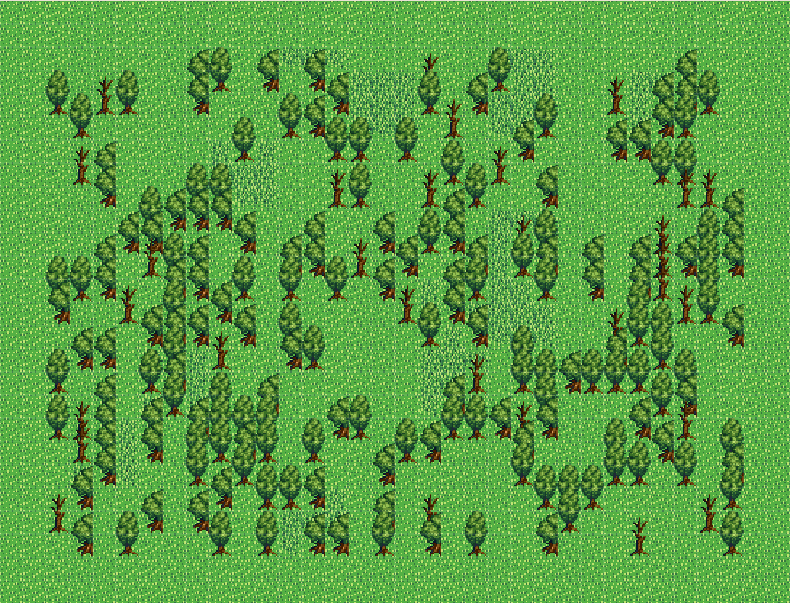
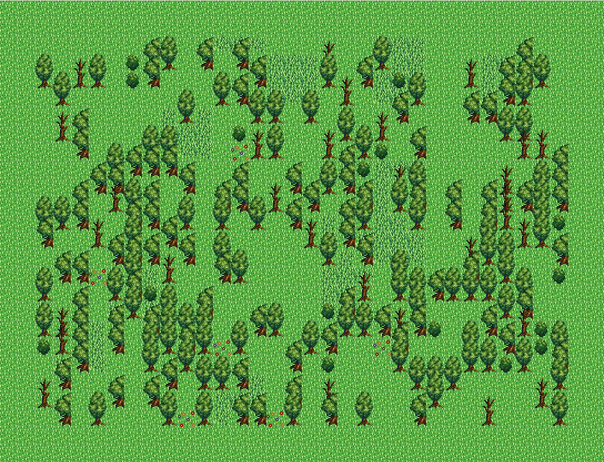
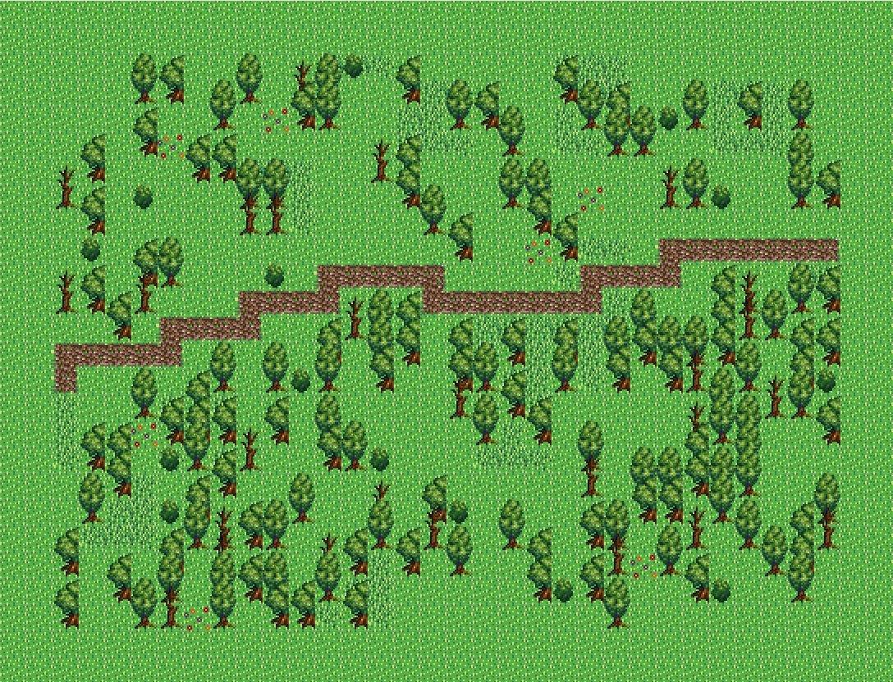
densitydeadRatiounderbrushclearings·path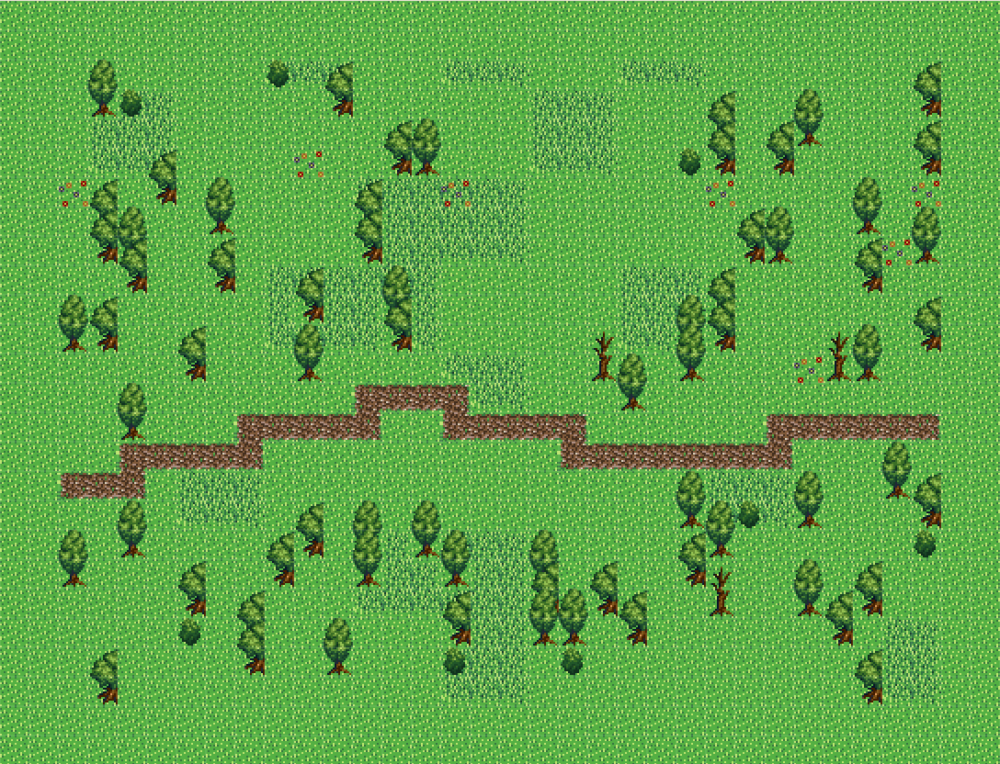
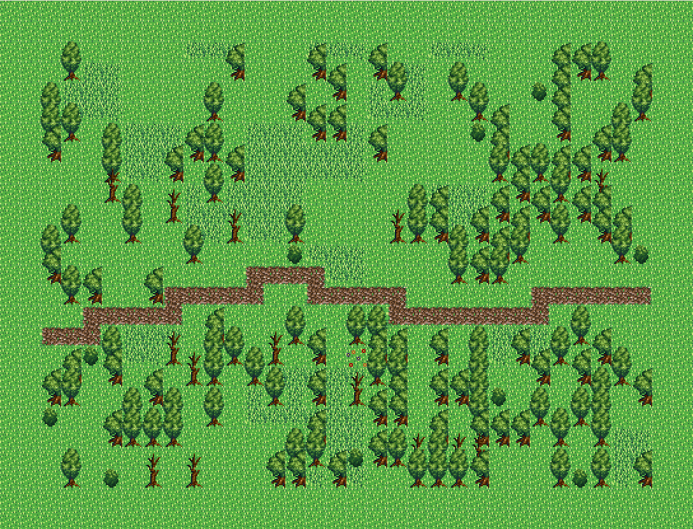
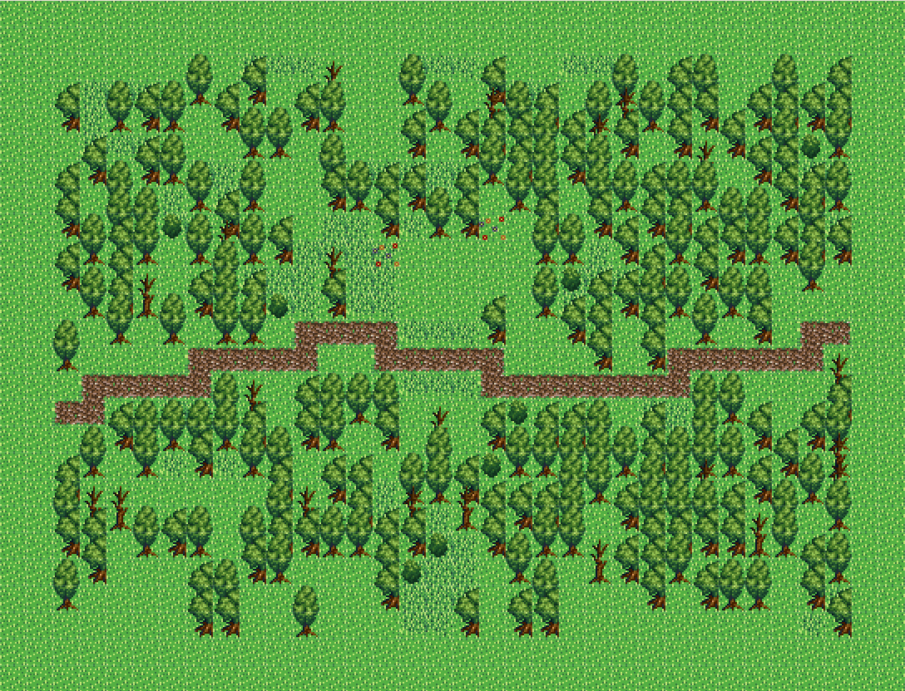
집 모양이 뻔한 건 카탈로그가 없어서가 아니다. houseTemplateCatalog.ts 에 직사각·ㄱ자·T자·ㄷ자·본채+헛간 등
34종이 좌표 데이터로 있다. LLM 이 고르니까 한 종에 수렴했을 뿐이다.
// village 오퍼레이터 내부 — 다양성은 이 세 줄이 보장한다 const pool = shuffle(HOUSE_TEMPLATE_DEFS, rng); // 시드 셔플 const picks = pool.filter(fitsLot).slice(0, houses); // 필지에 맞는 것에서 비복원 추출 const kits = roundRobin(MIXABLE_HOUSE_KIT_IDS, rng); // 킷도 순환 — 같은 색 연속 금지
houseVariety.ts 의 감지→리포트→프롬프트 되먹임 고리는 통째로 필요 없어진다.
"다섯 채가 전부 다른 모양"은 관찰로 유도하는 목표가 아니라 표본추출기의 불변식이 된다.
villagePresets[] 아이디어는 이렇게 흡수된다 — 타일셋 복제 없이.
기존 승인 UX(before/after 게이트 · region 하드 클립)는 그대로 두고, 그 앞에 두 가지가 추가된다.
| 단계 | 화면 | 비고 |
|---|---|---|
| 1 | 프롬프트 입력 "남쪽에 어촌 마을" — 또는 스튜디오 버튼에서 오퍼레이터 직접 선택 | 영역 미지정 시 사용자 선택 영역 = 암묵 region (기존 계약) |
| 2 | 변형 3장 썸네일 — 시드 3개로 즉시 생성, 클릭으로 선택. "다시" = 새 시드 3장 | LLM 재호출 없음 · ms 단위라 가능 |
| 3 | 파라미터 슬라이더 — density · houses · fields… 선택한 변형 위에서 실시간 조정 | "더 울창하게" 재타이핑 소멸 |
| 4 | before/after 승인 → 커밋 (undo 스냅샷 1개) | 기존 게이트 재사용 (PR #13) |
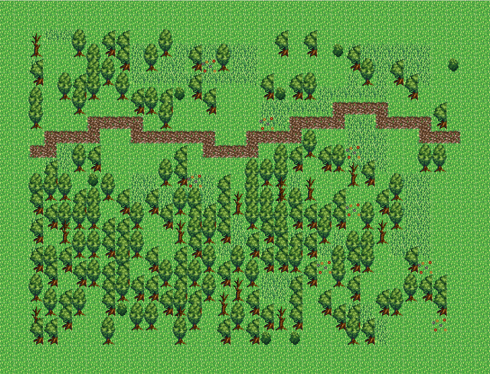
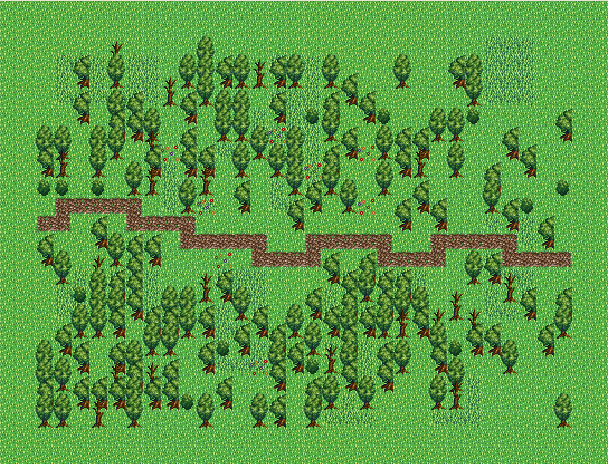
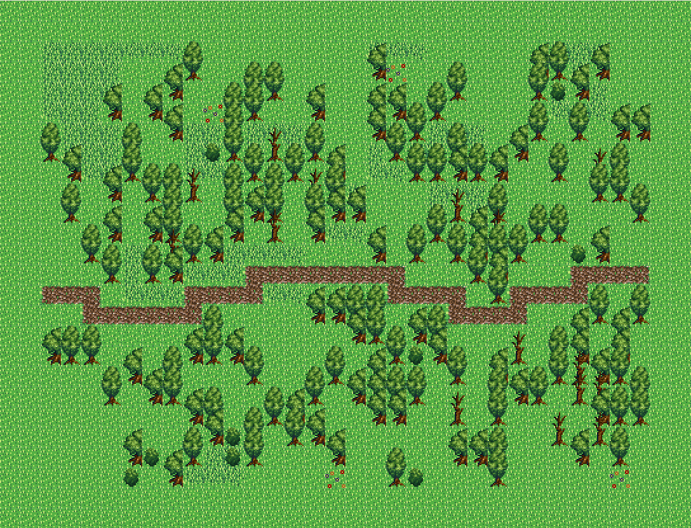
부수 효과: AI 없이도 돌아간다. 오퍼레이터+슬라이더는 스튜디오의 일반 도구로도 노출되므로, LLM 미연결 사용자도 "숲 버튼"으로 같은 품질을 얻는다. 의도 파서는 그 위의 편의층일 뿐이다. 수동 편집과의 충돌도 사라진다 — 오퍼레이터 산출은 일반 편집과 동일한 커밋 경로라서, AI 전용 상태가 없다.
| 게이트 | 판정 방법 | 비용 |
|---|---|---|
| 연결성 — 영역 가장자리·모든 문에서 상호 도달 | 통행 그리드 flood fill | O(n) · 코드 |
| 문 규칙 — 문 앞 1칸 통행 + 길 연결 | 의미 그리드 조회 | O(문 수) · 코드 |
| 지붕-벽 정합 · 수역 테두리 | 킷 시공·오토타일러가 구조적으로 보장 | 0 (구성상 불변) |
| 소품-지형 충돌 (solid 위 소품 금지) | 산포기가 통행 셀만 후보로 | 0 (구성상 불변) |
| 미감 — "어촌답게 보이는가" | vision 스팟체크 1장 (선택) — 또는 사용자의 눈 (변형 3장 UX) | LLM 1콜 · 선택 |
현행 게이트 대부분은 "LLM 이 실행 주체라서" 필요했다. 실행 주체가 코드가 되면 게이트의 절반은 구성상 불변(invariant)으로 승격되어 검사 자체가 사라지고, 나머지는 의미 그리드 위의 값싼 순회가 된다. 겹친 픽셀을 눈으로 판독하는 일은 이제 필수 경로가 아니다.
| 지우는 것 | 규모 | 대체물 |
|---|---|---|
| volumeContract.ts — 계획 거부·강제 주입 | 248줄 | 없음이 대체물이다. 의도 파서는 요청받은 오퍼레이터만 낸다 |
| 완성도 린트 "0건=미이행" 처벌 | 규칙 | 질문·거부·되돌리기는 정당한 0건 |
| WorkPlan · successTools · Ralph 재주입 | 850줄 | 산출물이 JSON 1개라 "계획 진행"이라는 개념 자체가 소멸 |
| buildSpec 밑그림 게이트 (set_build_spec) | 682줄 | region 입력 + 하드 클립 + 코드 게이트 |
| houseVariety 관찰 되먹임 고리 | 파일 | 비복원 추출 (불변식) |
| paint_tiles 등 LLM 좌표 지정 툴 16종 | — | 오퍼레이터 7종 (§13 Q1 — 미세수정용 잔류 여부는 열린 질문) |
| 시맨틱 테이블 9파일 (AI 경로에서) | ≈3,856줄 | 슬롯 보드 (1회 변환 스크립트) |
| A-3 — role:string 개방 + 어휘 마이그레이션 + DB 역할 탭 | 계획 | 고정 슬롯 12칸. A-1·A-2(#435)는 슬롯 능력표로 그대로 유효 |
| 보존: autotileEngine · 34종 템플릿 · 킷 6종 · region 클립 · before/after 게이트 · 통행 붓 · 오토타일 카드 UI · 스튜디오 | 전부 오퍼레이터의 부품 또는 그대로 | |
합치면 AI 경로에서 약 6천 줄이 목적을 잃고, assistantSession 의 상당 부분(계획 진행·재주입·볼륨 관리)이 함께 줄어든다. 지우는 것마다 대체물이 명시돼 있다는 점이 이 표의 요지다 — 기능 후퇴 없는 삭제.
| A 오퍼레이터 + 고정 슬롯 권고 | B 스케치 IR | C 현행 유지 + 게이트 보강 | |
|---|---|---|---|
| LLM 산출물 | JSON ≤15줄 | 저해상 의미 그리드 (예: 24×16 문자) | 툴콜 수십 개 |
| 속도·비용 | 1콜 + ms | 1콜(크게) + ms | 수십 콜 · 분 단위 |
| 다양성 | 보장 (표본추출) | 모델 역량 의존 | 설득 (되먹임) |
| novel 레이아웃 자유도 | 카탈로그 한계 | 높음 | 이론상 높음 · 실측 낮음 |
| 검증 | 코드 게이트 | 코드 게이트 (그리드라 가능) | vision + 다단 게이트 |
| 복잡도 | −6천 줄 | 중간 | +게이트 계속 증식 |
B 는 A 와 배타가 아니다 — 오퍼레이터가 커버 못 하는 요청("해골 모양 미로")에서 의도 파서가
op:"sketch" 로 폴백하면 된다. 같은 의미 그리드 · 같은 오토타일러 · 같은 게이트를 통과하므로
A 를 먼저 짓고 B 를 여덟 번째 오퍼레이터로 추가하는 순서가 자연스럽다. C 는 지금까지의 궤적 —
게이트가 게이트를 부르는 방향이라 권하지 않는다.
| 단계 | 내용 | 비고 · 재사용 |
|---|---|---|
| 1 | 슬롯 보드 — 고정 슬롯 스키마 + 보드 UI + 번들 9종 시드 스크립트(시맨틱 테이블 → 슬롯 1회 변환) | 오토타일 카드·통행 붓·메타데이터 에디터 재사용. 이 단계만으로 A-3 대체 완료 |
| 2 | forest · water · scatter · clear 오퍼레이터 + 변형 3장 + 슬라이더 (스튜디오 버튼, LLM 없이) | forest + 생성기 모드 UI 출하 완료(모드 스위치·파라미터·시드·승인 재사용, 테스트 16개) — 남은 것: 슬롯 참조로 일반화, water/scatter/clear, 변형 3장 썸네일 |
| 3 | village · road · field — 34 템플릿 + 킷 비복원 추출 + 필지/A* 골목 | authorHouseExecution 시공부 재사용, 지휘부만 교체 |
| 4 | 의도 파서 연결(경량 경로) → 구 경로 철거: volumeContract · WorkPlan · buildSpec 게이트 · 직접 페인팅 · 시맨틱 테이블 | 철거는 마지막 — 신·구가 잠시 병존하되 기본값은 신경로 |
순서의 논리: 가치가 앞에, 위험이 뒤에. 1–2단계는 LLM 을 건드리지 않아 회귀 위험이 없고, 사용자 체감(숲 품질·즉시 변형)이 가장 먼저 온다. 4단계의 철거는 신경로가 실사용으로 증명된 뒤다.
paint_tiles 하나만 소영역(≤64칸) 제한으로 잔류, 나머지 15종 철거.
근거 소스: src/ai/ 59파일 실측, houseVariety.ts·houseTemplateCatalog.ts·volumeContract.ts·buildSpec.ts,
PR #435 본문과 2026-09-01-tileset-owned-role-registry-design.md, 2026-09-01 적대적 20프롬프트 실사 리포트.
숲 이미지는 전부 실제 에디터 스크린샷 — 프로토타입 src/editor/regionTask/forestWrites.ts +
__oprnRegionTaskHarness.forest() + test/forestWrites.test.ts(6/6) 로 재현 가능:
?freshProject=1 부팅 → create_map → harness.forest(mapId, region, params, seed) → result.pending.apply().
마을 절의 미니맵·재료 칩만 칩셋(combined-town, 30×16 = 480타일) 크롭 도식이다.